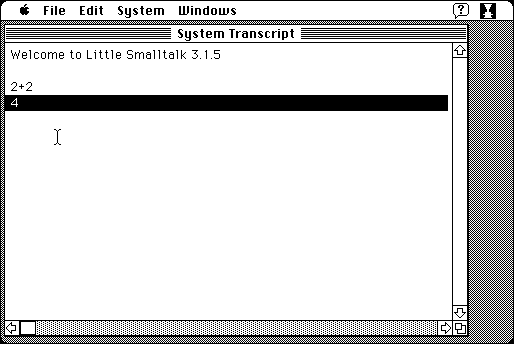

Download
littlesmalltalk3.15.zip (643K) Little Smalltalk 3.1.5 repackaged into a zipped hfs disk image and checksum file. The disk image can be mounted with Mini vMac.
littlesmalltalk3.15.sit.hqx (795K) Little Smalltalk 3.1.5 in the original format.
copyright: Julian Barkway, Tim Budd, and others.
mod date: Jul 2, 1995
license: free for non-commercial use
A “greatly simplified version of Smalltalk-80”. Requires System 7. Source code is included.

If you find these downloads useful, please consider helping the Gryphel Project, which hosts them.
Here are the md5 checksums for the downloads, signed with Gryphel Key 5:
--------- GRY SIGNED TEXT --------- 86cfaf6a045af216a6697213f0bcbc8f littlesmalltalk3.15.zip f5e27450c82c0721e2a5e0aeee586539 littlesmalltalk3.15.sit.hqx ------- BEGIN GRY SIGNATURE ------- Gry/4Xa8CFcUzxdN/LRiGAg4gf4opPo7r1p1EQjchWAF7z7tbBZ9ZDkZYD21MLj6 tnIJ5B4MFSHchKRy3c5UntxatVhVAJWBgjLECYKwJpsLOf8wCiZB6mXENCWaHYiD 9IBJPAWmUXyuCk55xlE9+OL1z5CB3FN2gY4azJUo8NS2NJdgXVfezxIpmnRsfx17 -------- END GRY SIGNATURE --------